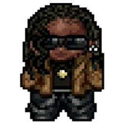
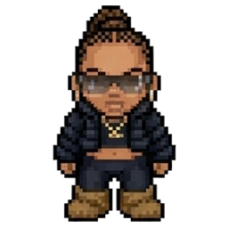
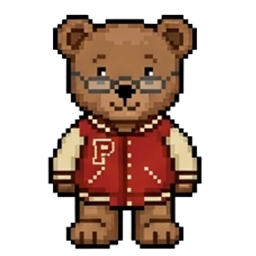
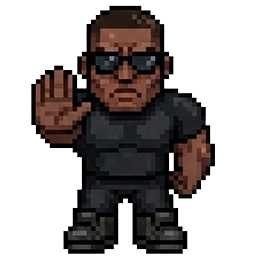

★ WELCOME ★
POPSTAR-LIFE.COM
AN ALL-NEW POPSTAR EXPERIENCE.
EXPLORE THE WORLD AS ME.
ENTER YOUR NAME
CHOOSE YOUR SKIN



ENTER →

ROOM FULL
— / 50 PLAYERS
QUEUED FOR ENTRY — HANG TIGHT
JOIN →
ENTER TO SEND · ESC TO CANCEL
★ TANA.EXE ★
⟳
ROTATE DEVICE
this game is landscape only
✕
OPEN LINK
JOIN THE LIST →
✓ YOU'RE ON THE LIST
[ tap ✕ or press ESC to close ]
WATCH ON YOUTUBE ↗
✕ CLOSE
💾 DISK
E
ACT
♪
WASD
/
↑↓←→
— MOVE
E
— INTERACT
M
— MUTE
ESC
— CLOSE
`
— DEBUG